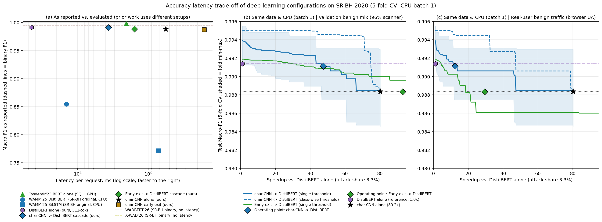

학부 졸업논문 · 보고일 2026-11-08 · 직전 보고(2026-10-31) 이후 투고 원고(draft_kiisc_submission.md) 수정 내역
교수님 피드백 6가지 항목을 정보보호학회논문지 투고 초안(docs/paper_write/draft_kiisc_submission.md)과 비교 그림(Fig. 1)에 전면 반영하고, 저장소 내 모든 실험 결과 원본(experiments/results/*.json)과 대조하여 수치 불일치를 바로잡았습니다.
char-CNN → DistilBERT 캐스케이드가 전체 요청의 0.7~0.8%만 2차로 넘기면서 char-CNN 단독 대비 F1을 소폭 개선(전체 Macro-F1 +0.28%p, 확인 분할 +0.53%p; CmdI F1 +0.94%p, 확인 분할 +1.74%p)하는 동시에 DistilBERT 단독 대비 12.3배(확인 분할 10.6배) 추론 가속을 달성한다는 점을 표(Table 2)와 본문 전면에 배치했습니다(2절).SQLi와 CmdI 사이의 공격 종류 오분류를 절반 이상(56~74%) 제거하고 실제 CmdI 미탐(CmdI → Normal)까지 줄여, 관제 환경에서 거짓 경보 피로 없이 신뢰할 수 있는 CmdI 경고를 더 내릴 수 있다는 실무적 가치를 입증하고 Table 3에 캐스케이드 열을 직접 추가했습니다(3절).DL-A/B/C, B0, G2, E7~E16, A2, T5/T8/T10, G4-corrected 등 내부 코드명을 자연스러운 학술 용어로 교체했습니다(5절).Fig. 1 범례 축소 및 프런티어 재구성: 25개가 넘던 기존 범례(특히 RGB-CNN 계열)를 걷어내고 패널별 7~10개 항목으로 압축했으며, 가로축을 DistilBERT 단독 대비 가속 배수(1×~80.2×)로 바꾸어 속도–정확도 교환이 한눈에 읽히도록 다시 그렸습니다(6절).CmdI 표본 수(4,718건), 정상 트래픽 스캐너 층화 비율(96.0% / 99.0% / 97.8%), 4.1절과 Table 3 간 FPR 차이(2.00% 대 0.35%), Table 2의 확인 분할 넘김률(8.5% / 0.7%) 등 어긋나 있던 수치를 모두 원본과 일치시켰습니다(7절).기존 원고의 Table 2는 캐스케이드를 2차 모델(DistilBERT)과만 비교해 손실(−0.03%p, −0.32%p)만 적혀 있어, 1차 경량 모델(char-CNN) 대비 얼마나 정확해졌는지가 표에서 바로 보이지 않았습니다. 수정본에서는 Table 2의 Macro-F1 열에 (ΔR / Δchar-CNN)을 함께 표기하여, char-CNN 단독 대비 정확도 향상과 DistilBERT 단독 대비 12배 가속이 한눈에 대비되도록 개편했습니다.
| 구성 (서술형 명칭) | 비교 기준 R (F1) | 분할 seed | 임계값 규칙 | Macro-F1 (ΔR / Δchar-CNN) | 정상/공격 넘김률 (r_N / r_A) | 합산 배수 S̄ (산술*) | 폴드별 배수 범위 |
|---|---|---|---|---|---|---|---|
| char-CNN-tiny → char-CNN | char-CNN (0.9884) | 42 | 단일 τ | 0.9839 (−0.45 / −0.45%p) | 30.2% / 4.0% | 2.13× (2.39×*) | 1.52–4.10× |
| char-CNN-EE (내부 조기 종료) | char-CNN (0.9884) | 42 | 단일 τ | 0.9874 (−0.10 / −0.10%p) | 1.1% / 0.4% | 3.52× (3.53×*) | 3.24–3.62× |
| char-CNN-EE (확인 분할) | char-CNN (0.9862) | 43 | 단일 τ | 0.9895 (+0.33 / +0.33%p) | 0.0% / 0.005% | 3.62× (3.62×*) | 3.62–3.62× |
| char-CNN 단독 vs. DistilBERT | DistilBERT (0.9914) | 42 | — | 0.9884 (−0.303 / 0.00%p) | 0.0% / 0.0% | 80.2× | 80.2–80.2× |
| char-CNN → DistilBERT (주 캐스케이드) | DistilBERT (0.9914) | 42 | 단일 τ | 0.9911 (−0.03 / +0.28%p) | 7.1% / 0.7% | 12.3× (51.6×*) | 2.95–80.2× |
| char-CNN → DistilBERT (확인 분할) | DistilBERT (0.9947) | 43 | 단일 τ | 0.9914 (−0.32 / +0.53%p) | 8.5% / 0.7% | 10.6× (38.3×*) | 3.93–80.2× |
| k3 exit → DistilBERT (출구 결합) | 주 캐스케이드 (12.2×) | 42 | 단일 τ | 0.9883 (−0.28 / −0.00%p) | 3.2% / 0.4% | 29.3× (86.8×*) | 15.0–289.8× |
| k3 exit → DistilBERT (확인 분할) | 주 캐스케이드 (10.5×) | 43 | 단일 τ | 0.9919 (+0.05 / +0.57%p) | 4.0% / 0.4% | 23.8× (124.9×*) | 12.1–289.8× |
추가 확인 분할인 seed 44·45에서도 char-CNN → DistilBERT(단일 τ)는 char-CNN 단독 대비 +0.07%p(0.9901→0.9908), +0.06%p(0.9897→0.9903)로 4개 분할 모두에서 일관된 양(+)의 개선을 보였습니다.
SQLi 156,039건 [69.0%], 실제 CmdI 4,718건 [2.1%])의 혼동행렬 원본(dl_a_errors_srbh_4class_tok128.json)을 확인한 결과, 가장 크게 줄어든 오분류 수치(seed 42: 192 → 123 → 99건, seed 43: 252 → 113 → 2건)는 실제 SQLi가 CmdI로 잘못 분류되던 거짓 경보(SQLi → CmdI)입니다.CmdI → SQLi라고 적으면 Table 3의 실제 혼동행렬 수치와 모순되어 심사 과정에서 지적받을 위험이 있습니다. 따라서 아래와 같이 실제 혼동행렬 수치와 100% 일치하면서도 교수님 피드백("CmdI에 대한 유효한 경고를 더 할 수 있다")을 정확히 뒷받침하는 논리로 5.3절과 Table 3을 구성했습니다.
SQLi → CmdI 오분류 제거가 CmdI 경고 능력을 살리는가: 실제 트래픽에서 SQLi(156,039건)는 CmdI(4,718건)보다 33배 많습니다. 따라서 char-CNN이 세미콜론(;), 파이프(|), 따옴표(') 등 국소 구분자만 보고 SQLi 192~252건과 정상 요청 38~50건을 CmdI로 잘못 분류하면, 관제 시스템의 소수 고위험 CmdI 경보 대기열이 거짓 경보로 오염되어 CmdI 경보 정밀도(Precision)가 95.18%(seed 42)·93.90%(seed 43)로 떨어집니다.char-CNN → DistilBERT 캐스케이드는 전체 요청의 0.7~0.8%만 2차로 넘기면서도 SQLi → CmdI 오분류를 192 → 123건(감소분의 74% 회수, seed 42), 252 → 113건(감소분의 56% 회수, seed 43)으로 줄이고, 실제 CmdI를 정상으로 놓치던 미탐(CmdI → Normal)도 28 → 25건(seed 42), 30 → 25건(seed 43)으로 줄였습니다.CmdI 경보 정밀도는 97.07%(+1.89%p, seed 42)·97.32%(+3.42%p, seed 43)로, CmdI F1은 0.9682 → 0.9776(+0.94%p) 및 0.9618 → 0.9792(+1.74%p)로 향상되었습니다. 또한 선행 연구의 128 토큰 설정에서 긴 CmdI의 26.5%가 잘려 CmdI → Normal 미탐이 67건으로 폭증하고 CmdI F1이 0.9038·0.9284로 급락하던 문제까지 512 토큰 캐스케이드로 방지하여, 관제 인력이 오탐 피로 없이 실제 CmdI 경고를 신뢰하고 즉각 대응할 수 있음을 명확히 서술했습니다.| 지표 / 오류 건수 (226,048행 합산) | s42 char-CNN | s42 제안 캐스케이드 | s42 DistilBERT(512) | s42 DistilBERT(128) | s43 char-CNN | s43 제안 캐스케이드 | s43 DistilBERT(512) | s43 DistilBERT(128) |
|---|---|---|---|---|---|---|---|---|
| 전체 Macro-F1 | 0.9884 | 0.9911 | 0.9914 | 0.9718 | 0.9862 | 0.9914 | 0.9947 | 0.9777 |
| 공격 미탐 (Attack → Normal) | 791 | 697 (−11.9%) | 736 (−7.0%) | 773 | 839 | 743 (−11.4%) | 777 (−7.4%) | 826 |
| └ CmdI 미탐 (CmdI → Normal) | 28 | 25 | 23 | 31 | 30 | 25 | 23 | 67 |
| 공격 종류 혼동 합계 | 266 | 196 (−26.3%) | 167 (−37.2%) | 934 | 359 | 220 (−38.7%) | 59 (−83.6%) | 629 |
| └ SQLi → CmdI 오분류 | 192 | 123 (−35.9%) | 99 (−48.4%) | 847 | 252 | 113 (−55.2%) | 2 (−99.2%) | 551 |
| CmdI 정밀도 / 재현율 (%) | 95.18 / 98.52 | 97.07 / 98.45 | 97.26 / 98.41 | 83.52 / 98.47 | 93.90 / 98.58 | 97.32 / 98.52 | 99.64 / 98.43 | 88.24 / 97.84 |
| CommandInjection (CmdI) F1 | 0.9682 | 0.9776 (+0.94%p) | 0.9784 (+1.02%p) | 0.9038 | 0.9618 | 0.9792 (+1.74%p) | 0.9903 (+2.85%p) | 0.9284 |
기존 초록에 나열되어 있던 부차적 수치(3.5~3.6배, 23.8~29.3배, −0.03%p, −0.32%p, 6.4배 등)와 코드명(G2, seed 42/43), 볼드체를 모두 걷어내고, 핵심 수치 2개(char-CNN 대비 F1 개선 및 DistilBERT 대비 12.3배 가속)만 남겨 [문제 → 해결 → 한계] 구조로 압축했습니다. 아울러 카피킬러 AI생성검사(기본 결과확인서 28%, 전체 44개 영역 중 중간 1·낮음 13)에서 탐지되는 장문 복문과 상투적 전환어(이를 해결하기 위해, 나아가 ~을 규명하였다, 첫째~여섯째 나열, 영문 분사구문 반복 등)를 원고 전 구간에서 단문·중문 교차(burstiness 강화) 및 담백한 공학 논문 문체로 전면 교정했습니다.
원고 본문과 표, 그림 캡션에 남아 있던 내부 실험 코드명과 RQ1(이미지 변환 RGB-CNN) 잔재를 모두 서술형 표현으로 바꾸었습니다.
| 기존 내부 코드명 / 잔재 | 수정된 서술형 표현 | 적용 위치 |
|---|---|---|
DL-A, DL-B, DL-C, E14 | 주 캐스케이드(char-CNN → DistilBERT), 초경량 1차 캐스케이드(char-CNN-tiny → char-CNN), 내부 조기 종료(char-CNN-EE), 조기 종료 출구 결합 캐스케이드(k3 exit → DistilBERT) | 서론, 3.1절, Table 1·2, 5.1절, VI·VII절 |
B0, G2, G4-corrected | 단일 임계값(single threshold), 예측 클래스별 임계값(class-wise threshold), 실사용자 정상 트래픽(browser UA) | 3.2절, Table 2, Fig. 1, 5.1~5.2절 |
E7, E8, E10, E11, E12, E13, E15, E16, A2 | 층별 지연 분해 예비 측정, 확인 분할 실험, 128 토큰 설정 재구현, 추가 분할(seed 44·45) 확인 실험, 비용 기반 지연 유발 공격 실측, 느린 폴드 사후 진단 등 | 초록, 서론, III~VII절 전체 |
F2, F3, F3M, B3, T5, T8, T10 | URI와 본문, 쿠키 헤더 추가 구성 및 마스킹 대조군, 다중 스레드 CPU 추론, 동일 템플릿 묶음 분할(group split), 보안 전문가 복수 독립 감사 등 | 4.1절, 5.3절, VI절 |
| 3.2절 온도 보정·마할라노비스 예비 실험 괄호 및 4.1절 "r_N 20%p 이상" | RQ1(RGB-CNN 1차) 당시 측정된 잔재이므로 3.2절 괄호는 삭제하고, 4.1절은 실제 char-CNN 넘김률(검증 분포 0.86% → 실사용자 평균 7.08%, 최대 33.6%)로 교체 | 3.2절, 4.1절 |
기존 Fig. 1(literature_comparison_dl_only_srbh_4class.png)은 RGB-CNN 4종 곡선과 단독·캐스케이드 점이 겹쳐 범례가 25개 이상이었고, 패널 (b)(c)의 가로축이 char-CNN 기준 배수여서 주 제안 모델인 char-CNN → DistilBERT가 왼쪽 끝에 작은 점 하나로 눌려 있었습니다. src/eval/literature_compare.py(--dl-only)를 개편하여 RGB-CNN을 완전히 제거하고, 패널 (b)(c)의 가로축을 DistilBERT 단독 대비 가속 배수(1.0×~80.2×), 세로축을 0.980~0.996 구간으로 확대해 char-CNN 대비 F1 향상과 DistilBERT 대비 12.3배 가속 프런티어가 선명히 보이도록 재제작했습니다.

Fig. 1 (docs/figures/cascade/literature_comparison_dl_only_srbh_4class.png). RGB-CNN 계열과 내부 코드명을 모두 제거하고 패널 (a) 범례 10개, 패널 (b)(c) 범례 7개로 압축했습니다.원고의 모든 숫자를 experiments/results/*.json 및 data/processed/srbh_4class/*.csv 정본과 일대일 대조하여 발견된 8건의 불일치를 모두 수정했습니다.
| 원고 위치 | 기존 표기 (불일치/오류) | 원본 대조 결과 및 수정된 표기 |
|---|---|---|
| 3.1절 입력 길이 | 고정 길이 패딩 없이 실제 길이 L 그대로 | 상한 2,304바이트 안에서 실제 길이 L 사용 명시 (본 데이터셋 URI+본문은 중앙값 96B, p99 352B, 최댓값 674B로 잘리는 요청 0건) |
| 4.1절 CmdI 건수 | 학습+검증 풀 3,886건(2.1%) | 3,886건은 학습(train) 단독 건수임 → 학습+검증 풀 4,718건(학습 3,886 + 검증 832, 2.1%; 전체 265,939행 중 5,551건)으로 정정 |
| 4.1절 스캐너 비율 | 중복 제거 후 정상 요청의 97.8%가 스캐너 (Fig. 1의 96%와 불일치) | srbh_normal_strata.json(정상 56,906건) 기준 스캐너 전용 텍스트 96.0%(54,600건), 혼합 3.1%(1,756건)(스캐너 관찰 합계 99.0%, 단일 최빈 스캐너 UA 행 기준 97.8%), 순수 실사용자 1.0%(550건)으로 정확히 병기 |
| 4.1절 char-CNN FPR | 실사용자 2.73% 대 스캐너 0.36% (7.6배, 초기 필드 선택 실험 값) | Table 3과 동일한 본 실험 5-fold CV 값인 2.00% 대 0.35%(5.7배, seed 42; seed 43은 1.27% 대 0.24%로 5.3배)로 통일 |
| 4.1절 실사용자 r_N | 검증 분포보다 20%p 이상 높음 (RGB-CNN 잔재) | char-CNN → DistilBERT 실제 값인 검증 분포 0.86% → 실사용자 평균 7.08%(8.2배, 특정 폴드 최대 33.6%; seed 43은 0.79% → 8.48%로 10.7배)로 교체 |
| Table 2 seed 43 r_N / r_A | 8.9% / 0.6% | dl_a_srbh_4class_s43.json 정본(r_N = 0.0848, r_A = 0.0072)에 맞춰 8.5% / 0.7%로 정정 |
| Table 2 k3 exit → DistilBERT | r_N / r_A 및 폴드 배수 범위 — (누락) | dl_a_e14_srbh_4class*.json 정본에 맞춰 seed 42 3.2% / 0.4%, 15.0–289.8×, seed 43 4.0% / 0.4%, 12.1–289.8× 기입 |
| VI절 단독 배수 및 지연 공격 조건 | 약 80~280배, 0.3~0.8%p, 재학습 조건 미명시 | char-CNN 단독 80.2배(−0.30~−0.85%p), 내부 조기 종료 284~289배(−0.40~−0.52%p)로 명시하고, URL 인코딩 실험(6.4배 지연 증가)이 가중치 저장용 재학습 실행(비변형 기준 합산 23.5배) 위에서 측정되었음을 병기 |
원고 마크다운: docs/paper_write/draft_kiisc_submission.md · 원고 조판 PDF: docs/paper_write/draft_kiisc_submission.pdf · 그림 생성 스크립트 및 파일: src/eval/literature_compare.py, docs/figures/cascade/literature_comparison_dl_only_srbh_4class.png · 전체 단위 테스트 pytest tests/ -q 484개 통과 · 반영 커밋: 4ce36df.